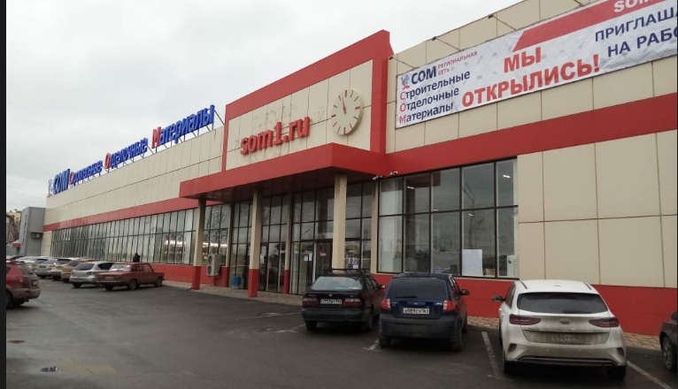

Строительный магазин СОМ
У нас вы сможете найти
- Инструмент для ремонта
- Краски
- Сухие смеси
- Товары для дома
- Сантехнику
- Крепеж
- И многое другое
- НАШ АДРЕС
- Город Таганрог
- Улица: Котлостроительная 37-15

Наши контакты
Тел: 8 (800) 250-09-00
НАШ САЙТ
У нас вы всегда можете купить сухие смеси: цемент, шпаклевки, ровнители для пола, штукатурки, клеевые и ремонтные смеси. Всегда в наличии и широком ассортименте: рулонная кровля, ондулин, шифер, различные виды утеплителя. В наших магазинах всегда большие запасы листовых материалов (OSB, фанера, двп, дсп), пиломатериалов и декоративных элементов из дерева (мебельные щиты, столешницы, фасады).
Для внешних и внутренних отделочных работ также есть всё необходимое: лакокрасочные материалы, напольные покрытия (ламинат, линолеум, ковролин), декоративные панели, обои и различные предметы для интерьера дома и сада. Инструмент представлен как ручным, так и электро-бензо оборудованием. Всегда в наличии УШМ, дрели, циркулярные пилы и различная садовая техника. У нас вы всегда найдёте подходящий для себя инструмент, будь то электро или бензопила, либо триммер, мотоблок.
Магазин СОМ также расположен в городе Нижняя Тура и Тобольск, самовывоз и доставка мебели для ванны, сантехники, различной кровли, гидро и пароизоляции по низким ценам. В наших магазинах вы сможете купить по низким ценам всё что необходимо для ремонта квартиры и дома.